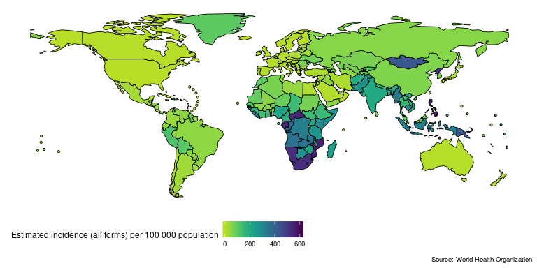
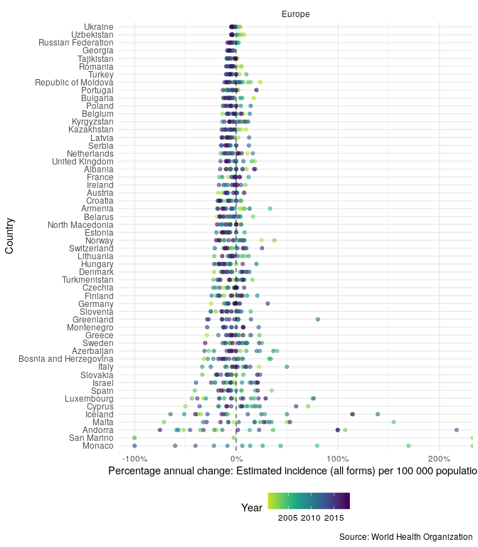

Quickly and easily import analysis ready Tuberculosis (TB) burden data, from the World Health Organisation (WHO), into R. The aim of getTBinR is to allow researchers, and other interested individuals, to quickly and easily gain access to a detailed TB data set and to start using it to derive key insights. It provides a consistent set of tools that can be used to rapidly evaluate hypotheses on a widely used data set before they are explored further using more complex methods or more detailed data. These tools include: generic plotting and mapping functions; a data dictionary search tool; an interactive shiny dashboard; and an automated, country level, TB report. For newer R users, this package reduces the barrier to entry by handling data import, munging, and visualisation. All plotting and mapping functions are built with ggplot2 so can be readily extended. See here for the WHO data permissions. For help getting started see the Getting Started vignette and for a case study using the package see the Exploring Global Trends in Tuberculosis Incidence Rates vignette.


Quick start
Lets get started quickly by mapping and then plotting TB incidence rates in the United Kingdom. First map the most recently available global TB incidence rates (this will also download and save both the TB burden data and its data dictionary, if they are not found locally, to R’s temporary directory),
getTBinR::map_tb_burden(metric = "e_inc_100k")
#> Downloading data from: https://extranet.who.int/tme/generateCSV.asp?ds=estimates
#> Saving data to: /tmp/Rtmp7FpgvP/tb_burden.rds
#> Downloading data from: https://extranet.who.int/tme/generateCSV.asp?ds=mdr_rr_estimates
#> Saving data to: /tmp/Rtmp7FpgvP/mdr_tb.rds
#> Joining TB burden data and MDR TB data.
#> Downloading data from: https://extranet.who.int/tme/generateCSV.asp?ds=dictionary
#> Saving data to: /tmp/Rtmp7FpgvP/dictionary.rds
#> 1 results found for your variable search for e_inc_100k
Then compare TB incidence rates in the UK to TB incidence rates in other countries in the region,
getTBinR::plot_tb_burden_overview(metric = "e_inc_100k",
countries = "United Kingdom",
compare_to_region = TRUE,
interactive = FALSE)
#> Loading data from: /tmp/Rtmp7FpgvP/tb_burden.rds
#> Loading data from: /tmp/Rtmp7FpgvP/mdr_tb.rds
#> Joining TB burden data and MDR TB data.
#> Loading data from: /tmp/Rtmp7FpgvP/dictionary.rds
#> 1 results found for your variable search for e_inc_100k
In order to compare the changes in incidence rates over time, in the region, plot the annual percentage change,
getTBinR::plot_tb_burden_overview(metric = "e_inc_100k",
countries = "United Kingdom",
compare_to_region = TRUE,
annual_change = TRUE,
interactive = FALSE)
#> Loading data from: /tmp/Rtmp7FpgvP/tb_burden.rds
#> Loading data from: /tmp/Rtmp7FpgvP/mdr_tb.rds
#> Joining TB burden data and MDR TB data.
#> Loading data from: /tmp/Rtmp7FpgvP/dictionary.rds
#> 1 results found for your variable search for e_inc_100k
Now plot TB incidence rates over time in the United Kingdom, compared to TB incidence rates in Europe and globally.
getTBinR::plot_tb_burden_summary(metric = "e_inc_num",
metric_label = "e_inc_100k",
countries = "United Kingdom",
legend = "top",
compare_all_regions = FALSE,
compare_to_region = TRUE,
compare_to_world = TRUE,
interactive = FALSE)
#> Loading data from: /tmp/Rtmp7FpgvP/dictionary.rds
#> 1 results found for your variable search for e_inc_100k
#> Extracting data for specified countries
#> Loading data from: /tmp/Rtmp7FpgvP/tb_burden.rds
#> Loading data from: /tmp/Rtmp7FpgvP/mdr_tb.rds
#> Joining TB burden data and MDR TB data.
#> Loading data from: /tmp/Rtmp7FpgvP/dictionary.rds
#> 1 results found for your variable search for e_inc_num
#> Loading data from: /tmp/Rtmp7FpgvP/tb_burden.rds
#> Loading data from: /tmp/Rtmp7FpgvP/mdr_tb.rds
#> Joining TB burden data and MDR TB data.
#> Loading data from: /tmp/Rtmp7FpgvP/dictionary.rds
#> 1 results found for your variable search for e_inc_num
#> Loading data from: /tmp/Rtmp7FpgvP/tb_burden.rds
#> Loading data from: /tmp/Rtmp7FpgvP/mdr_tb.rds
#> Joining TB burden data and MDR TB data.
#> Loading data from: /tmp/Rtmp7FpgvP/dictionary.rds
#> 1 results found for your variable search for e_inc_numWe can repeat the above plot but this time only for the UK - this allows us to get a clear picture of trends in TB incidence rates in the UK.
getTBinR::plot_tb_burden(metric = "e_inc_100k",
countries = "United Kingdom",
interactive = FALSE)
#> Loading data from: /tmp/Rtmp7FpgvP/tb_burden.rds
#> Loading data from: /tmp/Rtmp7FpgvP/mdr_tb.rds
#> Joining TB burden data and MDR TB data.
#> Loading data from: /tmp/Rtmp7FpgvP/dictionary.rds
#> 1 results found for your variable search for e_inc_100k
We might be interested in having some of this information in tablular form. We can either generate a short summary for the most recent year of available data with the following,
getTBinR::summarise_metric(metric = "e_inc_100k",
countries = "United Kingdom")
#> Loading data from: /tmp/Rtmp7FpgvP/tb_burden.rds
#> Loading data from: /tmp/Rtmp7FpgvP/mdr_tb.rds
#> Joining TB burden data and MDR TB data.
#> # A tibble: 1 x 6
#> country year metric world_rank region_rank avg_change
#> <chr> <int> <chr> <int> <int> <chr>
#> 1 United Kingdom 2017 8.9 (8.1 - 9.8) 165 32 -4.9%Or a more detailed dataset as follows,
getTBinR::summarise_tb_burden(metric = "e_inc_num",
stat = "rate",
countries = "United Kingdom",
compare_to_world = FALSE,
compare_to_region = FALSE,
verbose = FALSE)
#> # A tibble: 126 x 5
#> area year e_inc_num e_inc_num_lo e_inc_num_hi
#> <fct> <int> <dbl> <dbl> <dbl>
#> 1 United Kingdom 2000 11.9 10.7 13.1
#> 2 United Kingdom 2001 11.5 10.3 12.7
#> 3 United Kingdom 2002 13.1 11.8 14.3
#> 4 United Kingdom 2003 13.4 12.1 14.8
#> 5 United Kingdom 2004 13.2 11.9 14.5
#> 6 United Kingdom 2005 15.3 13.8 16.6
#> 7 United Kingdom 2006 15.3 13.8 16.4
#> 8 United Kingdom 2007 14.7 13.2 16.1
#> 9 United Kingdom 2008 15.0 13.5 16.1
#> 10 United Kingdom 2009 14.5 13.1 15.9
#> # … with 116 more rowsHere e_inc_num is used rather than e_inc_100k as incidence rates are being estimated based on notified cases. This allows country level rates to be compared to regional (using compare_to_region = TRUE) and global (using compare_to_world = TRUE) rates.
See Functions for more details of the functions used (note the fuzzy country matching, all functions will try to exactly match your country request and if that fails will search for partial matches) and for more package functionality. We could make the plots above interactive by specifying interactive = TRUE
Additional datasets
On top of the core datasets provided by default, getTBinR also supports importing multiple other datasets. These include data on latent TB, HIV surveillance, intervention budgets, and outcomes. The currently supported datasets are listed below,
| dataset | description | timespan | default |
|---|---|---|---|
| Estimates | Generated estimates of TB mortality, incidence, case fatality ratio, and treatment coverage (previously called case detection rate). Data available split by HIV status. | 2000-2017 | yes |
| Estimates | Generated estimates for the proportion of TB cases that have rifampicin-resistant TB (RR-TB, which includes cases with multidrug-resistant TB, MDR-TB), RR/MDR-TB among notified pulmonary TB cases. | 2017 | yes |
| Incidence by age and sex | Generated estimates of TB incidence stratified by age and sex. This dataset is currently experimental. | 2017 | no |
| Latent TB infection | Generated estimates incidence of latent TB stratified by age. | 2017 | no |
| Notification | TB notification dataset linking to TB notifications as raw numbers. Age-stratified, with good data dictionary coverage but has large amounts of missing data. | 1980-2017 | no |
| Drug resistance surveillance | Country level drug resistance surveillance. Lists drug resistance data from country level reporting. Good data dictionary coverage but has large amounts of missing data. | 2017 | no |
| Non-routine HIV surveillance | Country level, non-routine HIV surveillance data. Good data dictionary coverage but with a large amount of missing data. | 2007-2017 | no |
| Outcomes | Country level TB outcomes data. Lists numeric outcome data, very messy but with good data dictionary coverage. | 1994-2017 | no |
| Budget | Current year TB intervention budgets per country. Many of the data fields are cryptic but has good data dictionary coverage. | 2018 | no |
| Expenditure and utilisation | Previous year expenditure on TB interventions. Highly detailed, with good data dictionary coverage but lots of missing data. | 2017 | no |
| Policies and services | Lists TB policies that have been implemented per country. Highly detailed, with good data dictionary coverage but lots of missing data. | 2017 | no |
| Community engagement | Lists community engagement programmes. Highly detailed, with good data dictionary coverage but lots of missing data. | 2013-2017 | no |
| Laboratories | Country specific laboratory data. Highly detailed, with good data dictionary coverage but lots of missing data. | 2009-2017 | no |
These datasets can be imported into R by supplying the name of the required dataset to the additional_datasets argument of get_tb_burden (or any of the various plotting/summary functions). Alternatively, they can all be imported in one go using additional_datasets = "all", as below,
getTBinR::get_tb_burden(additional_datasets = "all", verbose = FALSE)
#> # A tibble: 8,290 x 461
#> country iso2 iso3 iso_numeric g_whoregion year e_pop_num e_inc_100k
#> <chr> <chr> <chr> <int> <chr> <int> <int> <dbl>
#> 1 Afghan… AF AFG 4 Eastern Me… 2000 20093756 190
#> 2 Afghan… AF AFG 4 Eastern Me… 2001 20966463 189
#> 3 Afghan… AF AFG 4 Eastern Me… 2002 21979923 189
#> 4 Afghan… AF AFG 4 Eastern Me… 2003 23064851 189
#> 5 Afghan… AF AFG 4 Eastern Me… 2004 24118979 189
#> 6 Afghan… AF AFG 4 Eastern Me… 2005 25070798 189
#> 7 Afghan… AF AFG 4 Eastern Me… 2006 25893450 189
#> 8 Afghan… AF AFG 4 Eastern Me… 2007 26616792 189
#> 9 Afghan… AF AFG 4 Eastern Me… 2008 27294031 189
#> 10 Afghan… AF AFG 4 Eastern Me… 2009 28004331 189
#> # … with 8,280 more rows, and 453 more variables: e_inc_100k_lo <dbl>,
#> # e_inc_100k_hi <dbl>, e_inc_num <int>, e_inc_num_lo <int>,
#> # e_inc_num_hi <int>, e_tbhiv_prct <dbl>, e_tbhiv_prct_lo <dbl>,
#> # e_tbhiv_prct_hi <dbl>, e_inc_tbhiv_100k <dbl>,
#> # e_inc_tbhiv_100k_lo <dbl>, e_inc_tbhiv_100k_hi <dbl>,
#> # e_inc_tbhiv_num <int>, e_inc_tbhiv_num_lo <int>,
#> # e_inc_tbhiv_num_hi <int>, e_mort_exc_tbhiv_100k <dbl>,
#> # e_mort_exc_tbhiv_100k_lo <dbl>, e_mort_exc_tbhiv_100k_hi <dbl>,
#> # e_mort_exc_tbhiv_num <int>, e_mort_exc_tbhiv_num_lo <int>,
#> # e_mort_exc_tbhiv_num_hi <int>, e_mort_tbhiv_100k <dbl>,
#> # e_mort_tbhiv_100k_lo <dbl>, e_mort_tbhiv_100k_hi <dbl>,
#> # e_mort_tbhiv_num <int>, e_mort_tbhiv_num_lo <int>,
#> # e_mort_tbhiv_num_hi <int>, e_mort_100k <dbl>, e_mort_100k_lo <dbl>,
#> # e_mort_100k_hi <dbl>, e_mort_num <int>, e_mort_num_lo <int>,
#> # e_mort_num_hi <int>, cfr <dbl>, cfr_lo <dbl>, cfr_hi <dbl>,
#> # c_newinc_100k <dbl>, c_cdr <dbl>, c_cdr_lo <dbl>, c_cdr_hi <dbl>,
#> # source_rr_new <chr>, source_drs_coverage_new <chr>,
#> # source_drs_year_new <int>, e_rr_pct_new <dbl>, e_rr_pct_new_lo <dbl>,
#> # e_rr_pct_new_hi <dbl>, e_mdr_pct_rr_new <int>, source_rr_ret <chr>,
#> # source_drs_coverage_ret <chr>, source_drs_year_ret <int>,
#> # e_rr_pct_ret <dbl>, e_rr_pct_ret_lo <dbl>, e_rr_pct_ret_hi <dbl>,
#> # e_mdr_pct_rr_ret <int>, e_inc_rr_num <int>, e_inc_rr_num_lo <int>,
#> # e_inc_rr_num_hi <int>, e_mdr_pct_rr <int>,
#> # e_rr_in_notified_pulm <int>, e_rr_in_notified_pulm_lo <int>,
#> # e_rr_in_notified_pulm_hi <int>, source_hh <chr>, e_hh_size <dbl>,
#> # prevtx_data_available <int>, newinc_con04_prevtx <int>,
#> # ptsurvey_newinc <lgl>, ptsurvey_newinc_con04_prevtx <lgl>,
#> # e_prevtx_eligible <dbl>, e_prevtx_eligible_lo <dbl>,
#> # e_prevtx_eligible_hi <dbl>, e_prevtx_kids_pct <dbl>,
#> # e_prevtx_kids_pct_lo <dbl>, e_prevtx_kids_pct_hi <dbl>, new_sp <int>,
#> # new_sn <int>, new_su <int>, new_ep <int>, new_oth <int>,
#> # ret_rel <int>, ret_taf <int>, ret_tad <int>, ret_oth <int>,
#> # newret_oth <int>, new_labconf <int>, new_clindx <int>,
#> # ret_rel_labconf <int>, ret_rel_clindx <int>, ret_rel_ep <int>,
#> # ret_nrel <int>, notif_foreign <int>, c_newinc <int>, new_sp_m04 <int>,
#> # new_sp_m514 <int>, new_sp_m014 <int>, new_sp_m1524 <int>,
#> # new_sp_m2534 <int>, new_sp_m3544 <int>, new_sp_m4554 <int>,
#> # new_sp_m5564 <int>, new_sp_m65 <int>, new_sp_mu <int>, …Once imported, these datasets can be used in the plotting and summary functions provided by getTBinR (by passing them to their df argument or using the additional_datasets argument in each function). See the contributing section if their are any other datasets that you think getTBinR should support or if you have suggestions for better descriptions for each dataset.
Shiny dashboard
To explore the package functionality in an interactive session, or to investigate TB without having to code extensively in R, a shiny dashboard has been built into the package. This can either be used locally using,
Or accessed online. Any metric in the WHO data can be explored, with country selection using the built in map, and animation possible by year.

Country report
To get a detailed overview of TB in a country of your choice run the following, alternatively available from the built in dashboard above.
## Code saves report into your current working directory
render_country_report(country = "United Kingdom", save_dir = ".")
Contributing
File an issue here if there is a feature, or a dataset, that you think is missing from the package, or better yet submit a pull request!
Please note that the getTBinR project is released with a Contributor Code of Conduct. By contributing to this project, you agree to abide by its terms.
Citing
If using getTBinR please consider citing the package in the relevant work. Citation information can be generated in R using the following (after installing the package),
citation("getTBinR")
#>
#> To cite getTBinR in publications use:
#>
#> Sam Abbott (2019). getTBinR: an R package for accessing and
#> summarising the World Health Organisation Tuberculosis data
#> Journal of Open Source Software, 4(34), 1260. doi:
#> 10.21105/joss.01260
#>
#> A BibTeX entry for LaTeX users is
#>
#> @Article{,
#> title = {getTBinR: an R package for accessing and summarising the World Health Organisation Tuberculosis data},
#> author = {Sam Abbott},
#> journal = {Journal of Open Source Software},
#> year = {2019},
#> volume = {4},
#> number = {34},
#> pages = {1260},
#> doi = {10.21105/joss.01260},
#> }Docker
This package has been developed in docker based on the rocker/tidyverse image, to access the development environment enter the following at the command line (with an active docker daemon running),
docker pull seabbs/gettbinr
docker run -d -p 8787:8787 -e USER=getTBinR -e PASSWORD=getTBinR --name getTBinR seabbs/gettbinrThe rstudio client can be accessed on port 8787 at localhost (or your machines ip). The default username is getTBinR and the default password is getTBinR. Alternatively, access the development environment via binder.